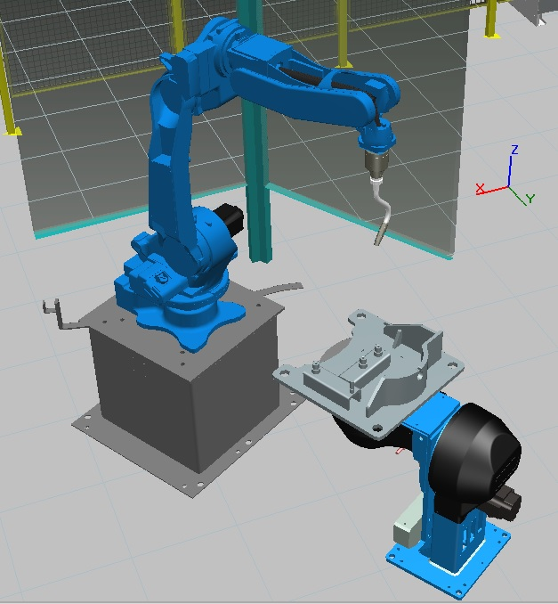

Date: February 2019 | Category: Personal Projects | Affiliation: Colorado State University
Model an industrial 6-axis robot (Yaskawa Motoman) cell using CAD files. Develop kinematics for grouped prototype components and simulate arc welding cell. Test and correct collision detection and add new welding paths with continuous process generator. Develop offline program production factory floor robot cell deployment.
Offline programming is a process of creating an independent robot program to replicate an actual industrial robot cell. The offline programming and 3D graphical robotics simulator help to create the optimal program paths for the robots to perform a specific task. Robot paths, reachability analysis, collision and near-miss detection, and cycle time reporting can be included when simulating the robot program.
These programs can then be uploaded to the real industrial robot for execution. Previously, a teach pendent was used to program the robots on-line and manually. However, this method of offline programming does not interfere with production as the program for the robot is created outside the production process. It can be uploaded or updated during the downtime of the robots. Basic simulation of a production industrial robot cell is avilable in the previous topic above.
For this project I have used the RobotExpert software available at : Siemens Product Lifecycle Management - Tecnomatix. More details about the product can be found at Siemens: Tecnomatix.
NOTE: All files required to run the OLP/simulation with specific RobotExpert cell is provided in the GitHub link above. Make sure you specify the extracted library path in File> Options> Library in the PLM software.
Figure 1. CAD files are individually imported and converted into RobotExpert software specific files with .cojt extension
Figure 2. Relocated and manipulated layout elements for better view of basic cell
Figure 3. Robot CAD model will be imported with reference frames and links
Figure 4. First Assembly of basic cell - Mounting Robot on the pedestal, bare metal on the welding pad, and relocating fences
Figure 5. You can take it a step further and and create an enclosed cell for OLP simulation
Figure 6. Parallel perspective view of the Arc Welding Cell

Figure 7. Arc Welding Setup
© Copyrights Anil Harish. All Rights Reserved